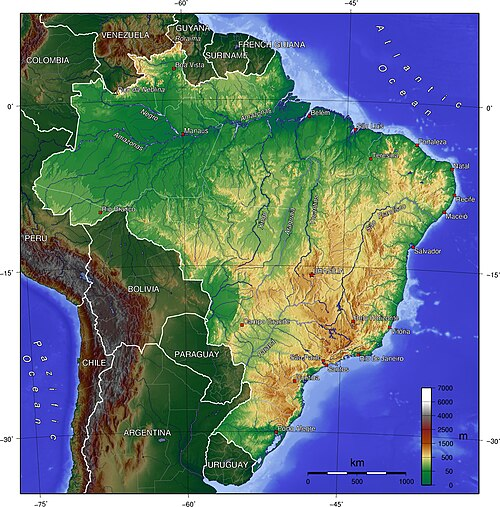
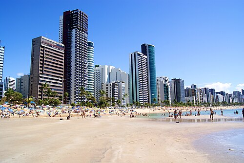
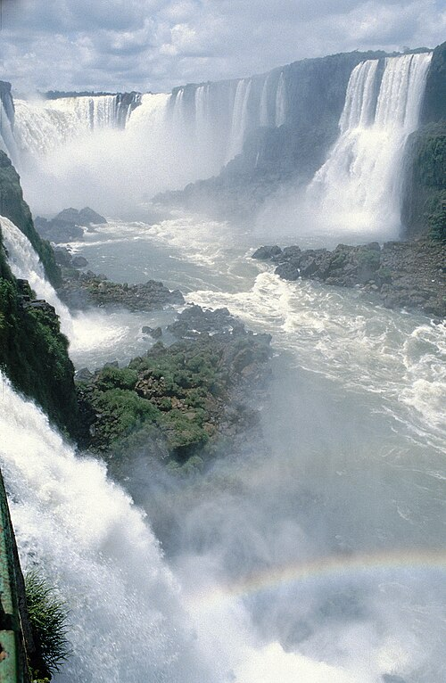
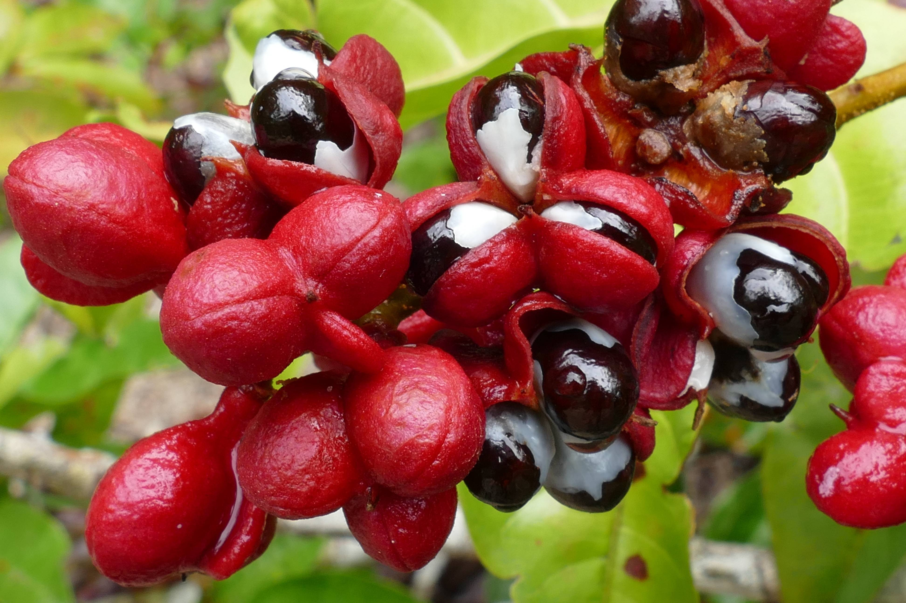
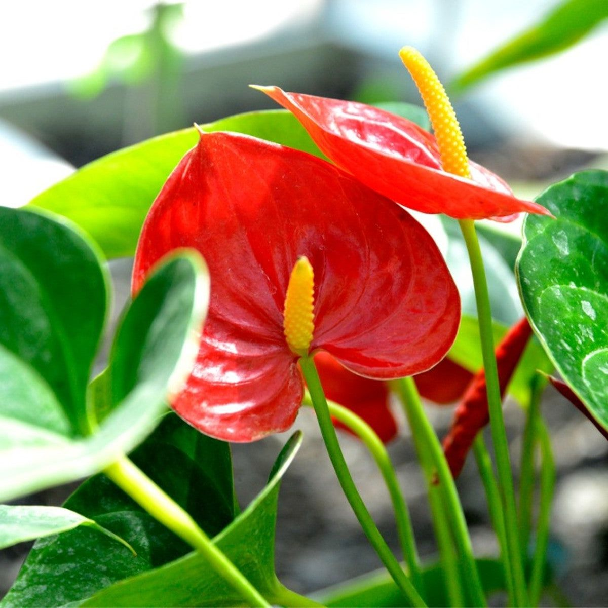

Datorită întinderii țării, geografia Braziliei este foarte diversificată, dispunând de regiuni semi-aride, muntoase, tropicale, subtropicale și de varietăți climatice de la cea secetoasă, ploioasă ecuatorială, la un climat mai temperat în zonele sudice.
În Brazilia se regăsesc o serie de superlative mondiale, cum ar fi Pantanal în Mato Grosso do Sul, una dintre cele mai mari mlaștini ale lumii și rezervație a biosferei declarată de UNESCO, Insula Bananal, cea mai mare insulă fluvială a lumii, Insula Marajó, cea mai mare insulă fluviomarină, Anavilhanas, unul dintre cele mai mari arhipelaguri fluviale sau fluviul Amazon, cel mai mare fluviu în raport cu debitul apei curgătoare și fluviul ce dispune de cel mai mare bazin hidrografic.
De asemenea, Amazonul este și unul dintre cele mai lungi din lume.

Clima Braziliei este foarte umedă, având caracteristici diverse, spre exemplu este foarte umed-călduroasă ecuatorială în ținuturile septentrionale, foarte umed-subtropicală în regiunea sudică și São Paulo sau foarte umed-călduroasă tropicală într-o fâșie îngustă a litoralului, între orașele Rio de Janeiro și São Paulo.
Clima umedă se întâlnește și în alte regiuni ale țării: umed-călduroasă ecuatorială dominantă în Acre, Rondônia și Roraima și cu influențe asupra vremii în Mato Grosso, Amazonas, Pará și Amapá și tropicală prezentă în São Paulo și Mato Grosso do Sul. Diferite varietăți ale climei umede influențează și alte părți ale Braziliei. Clima aridă și semi-aridă este limitată la regiunea Nord-Est.
Deși clima braziliană este foarte variată, ea rămâne relativ stabilă, iar catastrofele meteorologice au loc cu o frecvență relativ redusă. Totuși, marele ciclon Catarina a cauzat în anul 2004 pierderi semnificative în regiuni din Rio Grande do Sul și Santa Catarina.
Cea mai înaltă temperatură înregistrată în Brazilia a fost de 44,7 °C în Bom Jesus, în Piauí, la data de 21 noiembrie 2005[58]. La extrema cealaltă, cea mai scăzută temperatură a fost de –17,8 °C în Urubici, Santa Catarina, înregistrată la data de 29 iunie 1996[59].

Brazilia dispune de cea mai întinsă rețea hidrografică a lumii. Principale fluvii care formează cele mai importante bazine sunt Amazon, São Francisco, Paraná, Uruguay și Paraguay. Amazonul este cel mai lung fluviu din lume (după Nil), traversând Brazilia de la vest la est prin Pădurea Amazoniană.
Bazinul său este cel mai întins, peste 60% din acesta desfășurându-se pe teritoriul acestei țări, cuprinzând fluviul propriu-zis și alte aproximativ 1.100 de râuri.
Amazonul în sine se formează pe teritoriul Braziliei la confluența râului Negro cu râul Solimões.

Teritoriul Braziliei cuprinde o gamă variată de ecosisteme, cum ar fi Pădurea Amazoniană, recunoscută că fiind cea mai diversificată din punct de vedere biologic din lume, Pădurea Atlantică sau Cerrado.
Bogăția naturală a Braziliei se reflectă prin varietatea biotopurilor, existând totuși multe aspecte necunoscute încă, specii noi de animale și plante fiind descoperite aproape zilnic. Oamenii de știință estimează că numărul total al speciilor de animale și plante poate să se apropie de patru milioane, existând peste 56.000 de specii de plante, 3.000 specii de pești de apă dulce, 517 specii de amfibieni, 1.677 specii de păsări și 530 de specii de mamifere, numărul speciilor de insecte depășind 10.000.
Printre mamiferele mari se numără puma, jaguarul, ocelotul, câinele sud-american și vulpea. Alte specii precum pecarul, tapirul, furnicarul, leneșul, oposumul și animalul tatu sunt de asemenea foarte răspândite și au un efectiv mare de indivizi. Pădurile din sud sunt populate de cerbi, iar maimuțele, prezente sub diverse specii, sunt foarte răspândite în întinderile păduroase din partea de nord a țării.
Problemele Braziliei legate de protejarea mediului înconjurător sunt atât de acute încât au provocat reacții internaționale. Moștenirea naturală a țării este amenințată de activitățile economice intensive cum sunt creșterea bovinelor, agricultura, exploatarea forestieră, mineritul, extragerea uleiului și gazului, pescuitul intensiv, urbanizarea, incendiile, schimbările climatice, comerțul cu animale, construirea barajelor, poluarea apelor și apărarea speciilor invazive. În multe părți ale țării dezvoltarea economică rapidă amenință ambianța naturală, rezolvarea căreia este, alături de cea a problemelor sociale, una dintre cele mai importante sarcini de pe agenda guvernului brazilian.

